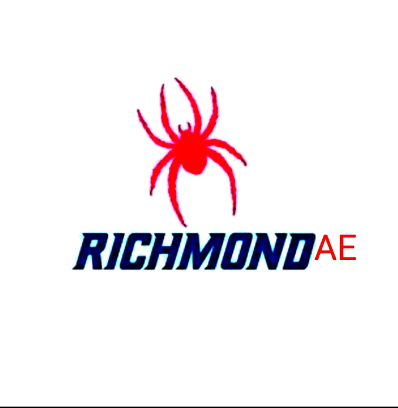

Overview
Purpose
As an adventurous sport, rafting requires careful planning before embarking on a journey. However, our site is designed to assist you in navigating the rough waters by providing equipment and expert guides upon request, ensuring a safe and enjoyable trip down the river. So come join us to satisfy your craving for adventure and experience the thrill of rafting!
Audience
Target audience:
- Individuals who are seeking thrilling experiences and excitement in their leisure activities.
- Adventure enthusiasts who enjoy exploring new destinations and trying out new outdoor activities.
- Families or vacationers looking for engaging and entertaining experiences while on holiday.
- Health-conscious individuals who prioritize fitness and outdoor activities as part of their lifestyle.
- Families who are seeking fun and memorable adventures together.
Branding
Website Logo
Style Guide
Color Palette
Palette URL:
https://coolors.co/606c38-283618-fefae0-dda15e-bc6c25| Primary | Secondary | Accent 1 | Accent 2 | Accent 3 |
|---|---|---|---|---|
| [#606c38] | [#283618] | [#fefae0] | [#bc6c25] | [#dda15e] |
Typography
Heading Font: Merriweather
Paragraph Font: Lato
Normal paragraph example
The best Whitewater Rafting in Colorado, White Water Rafting Company offers rafting on the Colorado and Roaring Fork Rivers in Glenwood Springs. Since 1974, we have been family owned and operated, rafting the Shoshone section of Glenwood Canyon and beyond.
Colored paragraph example
Our river trips cater to a diverse range of individuals, from mild adventures suitable for families, to exclusive experiences for physically fit and experienced rafters. Whether you're looking for a calm and scenic ride or an adrenaline-fueled adventure, White Water Rafting Company has got you covered. We are committed to creating customized river adventures tailored to your unique needs and preferences.
Navigation
Site Map
Wireframes
Home